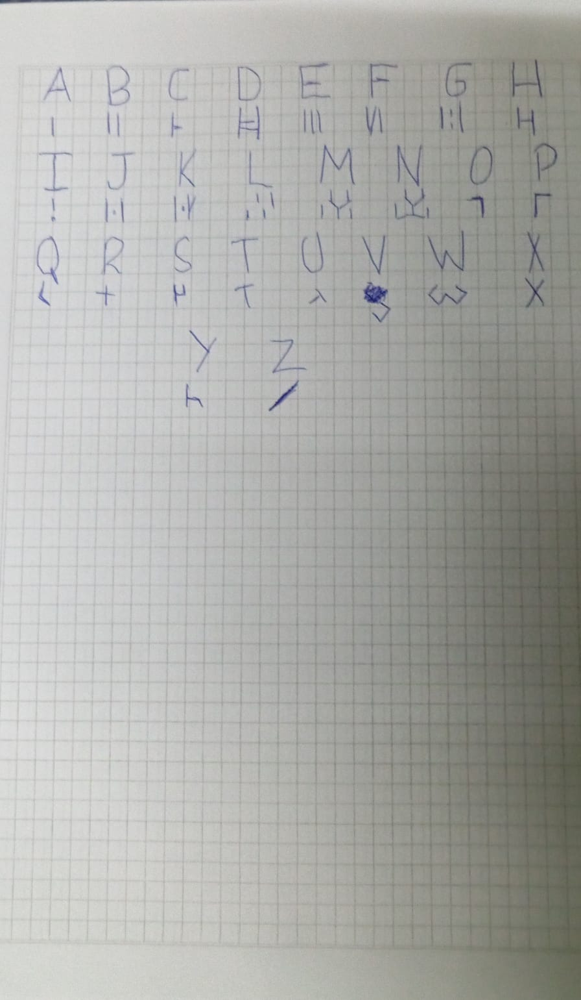

Hola Vale supongo que para este punto ya abras leído las dos cartas si es que no te spoliaste ahora mismo después de leer la carta verde.
Bueno vamos directo al grano esta página solo la hice para que puedas descifrar los codigos que deje en las cartas tampoco va a ser cosa de otro mundo no soy Alex Hirsch ni me puedo comparar con el
En esta pagina web te estare dejando una imagen con mi idioma para que puedas ver y desifrar lo que dice en las otras dos cartas aparte veras tambien un link de youtube la idea es que escuhces el video mientras tratas de desifrar las cartas
por sierto yo estoy haciendo esta pagina web con un video tutorial y se que tiene muchos errores estuve como 35 minutos para poner la imagen y siempre que intento modificar el tamaño se borra por lo que lo voy a dejar asi
Es pero que te guste esto realmente me gusto hacer todo esto para ti no soy el mejor para demostrar sentimientos pero si soy muy detallista y cuando se trata de expresar mi amor y cariño ahi si me sale por ciero el mix de youtube esta a un costado de la imagen
 Yotube mixno te voy a mentir esto lo agregue de ultimo momento porque me gusto aunque puede que me arrepienta pero cosas de alguien un poco enamorado supongo, en resumen son canciones de queen que si le quitas algunas letras queda una frase o palabra no te voy a especificar que es pero me parecio bonito al final de cuentas, suerte
Para este punto ya habras habierto el link de youtube remix y debo decirte que es de lo que mas me gusta de esta carta si te estas pregutando la mayoria de las canciones las saque de esa conversacion que tuvimos donde te pregunte cuales eran las musicas que mas te gustaban y yo no tenia nada de esto planedo todavia pero que suerte que anote algunas porque aunque ese momento no te lo habia dicho pensaba escucharlas para saber mas de tu gusto musical y en el trascurso de la semana si las escuche no recordaba los nombres nomas XD, si me gustaron y si tendria que elegir la que mas me gusta de las 8 que puse en esa playlist seria goodbye my danish sweetheart la musica trata sobre como la chica de la cancion pierde a la persona que amo y creo yo que tambien ella no se dio cunta de ese amor hasta que lo perdio quizas tambien tenga algo de nostalgia y arrepentimiento por parte de ella y que ella podia haber hecho mejores cosas para al final es una separacion y ella tiene que continuar adelante al menos asi lo veo tuve que escuchar la musica 4 veces para llegar a esta conclucion puedo estar mal si, pero es lo que yo entiendo por la musica igual y contodo lo que aborda la musica me gusta y me parece bonita
Honestamente nose que pensaras de mi despues de todas estas cartas y el disco pero no soy alguien que esta loco o cosas asi simplemente soy detallista y aunque me gusta demostrar mis sentimientos en persona realmente me da mucha verguenza pero tampoco me gusta hacer estas cosas por WhatsApp o Instagram por lo que se me ocurrio hacer todas estas cartas la primera trata de nuestra amistad la segunda de mi amor hacia ti por eso esa es la mas empalagosa por asi decirlo y de la que mas habla de mi porque como pudiste notar no hablo mucho de mi, claro de mis gustos o de lo que hago con mis amigos si te hable pero de mi como tal no, en la numero dos hablo mucho de como me siento o de mucho de mis pensamientos ya que quiero que me conozcas mejor y claro que tambien quiero conocerte mejor a ti tambien y quiero que esas cosas pasen mas frente a frente porque me gusta estar en llamada contigo y jugar contigo pero hay veces en la que me distraigo facil y olvido detalles que me dijiste. Tambien decirte que para el punto que yo estoy escribiendo esta carta vos estas enferma y yo se que mis palabras de aliento no son las mejores, nunca se como hacer centir mejor a alguien, pero encerio me importas y quiero que te recuperes solo que no se como expresar mi preocupacion y estoy seguro que cuando te entregue esto ya estaras sana nuevamente para finalizar solo te dire que te estuve dejando muchas pistas sobre estas cartas y el regalo por todas partes la de ig lo que probablemente no pudiste ver porque fue uno de esos dias que estabas re enferma y no usaste el celular pero en resumen era una nota que decia: quien camina 3 horas por un disco ? y tenia la musica de Darness At The Heart Of My Love. En fin eso seria todo esperare tu respuesta sobre este regalo y perdon por la falta ortografica no soy bueno para la literatura